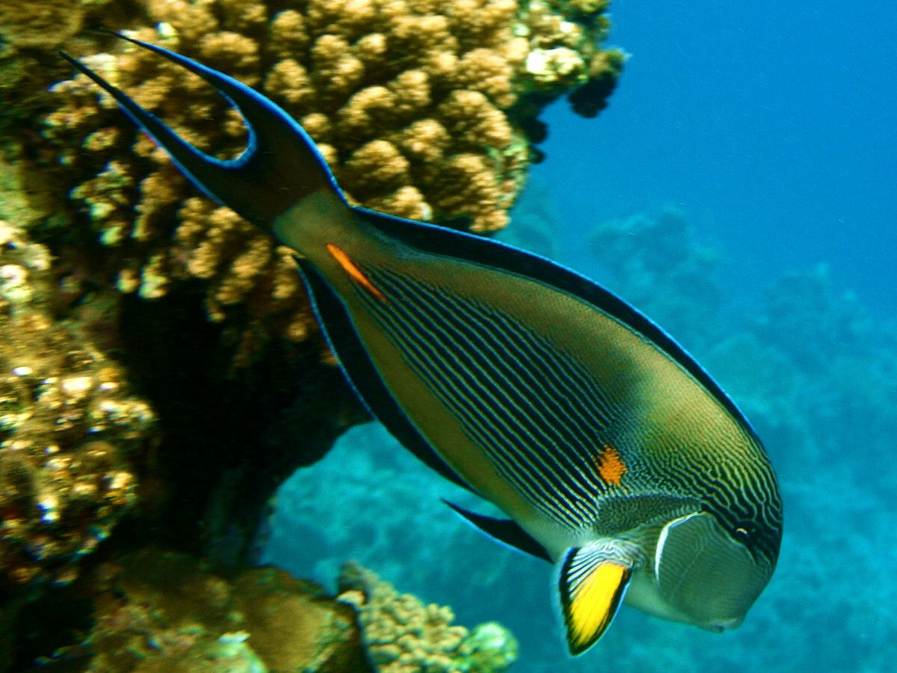

Рыбы обитают как в солёных, так и в пресных водоёмах — от глубоких океанических впадин до горных ручьёв. Рыбы играют важную роль в большинстве водных экосистем как составляющая пищевых цепей. Многие виды рыб употребляются человеком в пищу и поэтому имеют важное промысловое значение.
В мире известно 35 768 видов рыб (по состоянию на 2020 год), однако постоянно описываются новые — каждый год описывается около 300—500 новых для науки видов. В России обитает около 3000 видов, в том числе в пресных водах встречается более 280 видов.
